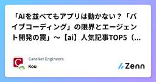
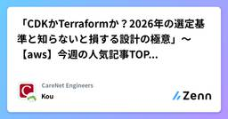

CareNet Engineersのフィード
https://zenn.dev/p/carenet
株式会社ケアネットのエンジニアブログです。CareNetサービスの技術情報を中心に記事を投稿しております。 各記事の内容は個人の意見であり、企業を代表するものではございません。
フィード

「AIを並べてもアプリは動かない？「バイブコーディング」の限界とエージェント開発の罠」～【ai】人気記事TOP5（2026/10/04） 1
1
CareNet Engineersのフィード
!この記事はZennからaiのLike数が多い記事のリストを自動的取得し、AIを利用して要約し、自動更新されています。 「AIを並べてもアプリは動かない？「バイブコーディング」の限界とエージェント開発の罠」人気記事TOP5（2026/10/04） 実務において敵対的レビューはどの程度有効なのかAIによる「敵対的レビュー」を実際の開発業務に導入し、その有効性と課題を実データから検証した結果が書かれている記事。複数レーンを並列実行する検証手順と1,413件に及ぶ指摘データの分析標準のコードレビュー機能と比較した際の、重大なバグやセキュリティ問題への検出力通常の約9倍か...
2日前

「PHPでもここまでできる！「代数的データ型」でバグを未然に防ぐ型安全設計」～【php】今週の人気記事TOP5（2026/10/04） 1
CareNet Engineersのフィード
!この記事はZennからphpのLike数が多い記事のリストを自動的取得し、AIを利用して要約し、自動更新されています。 「PHPでもここまでできる！「代数的データ型」でバグを未然に防ぐ型安全設計」今週の人気記事TOP5（2026/10/04） フロントエンド・PHPカンファレンス北海道2026登壇レポート: 代数的データ型って何が嬉しいの？仕様上あり得ない状態を型で防ぐアプローチとして、代数的データ型の有用性を解説した登壇レポート記事。TypeScriptとPHPの具体例を交え、型を「値の集合」と捉える設計手法が紹介されている。直積型・直和型の基本的な概念と、型を集...
3日前

「CDKかTerraformか？2026年の選定基準と知らないと損する設計の極意」～【aws】今週の人気記事TOP5（2026/10/04） 1
CareNet Engineersのフィード
!この記事はZennからawsのLike数が多い記事のリストを自動的取得し、AIを利用して要約し、自動更新されています。 「CDKかTerraformか？2026年の選定基準と知らないと損する設計の極意」今週の人気記事TOP5（2026/10/04） 別会社の開発チームに AWS 環境を共有するのって大変だ外部の開発パートナーに対して、安全かつ管理負荷を抑えてAWS環境のアクセス権限を共有するための、クロスアカウントIAMロールの設計と運用方法について解説されている記事。AWS TEAMの検証と見送りに至った前提条件の不一致権限と管理の境界を定義した4層のIAMポリ...
4日前

「知らないと大損！Opus 5.5とコーディングエージェントで枠を溶かさない3つの対策」～【claude】人気記事（2026/10/04） 1
CareNet Engineersのフィード
!この記事はZennからclaudeのLike数が多い記事のリストを自動的取得し、AIを利用して要約し、自動更新されています。 「知らないと大損！Opus 5.5とコーディングエージェントで枠を溶かさない3つの対策」人気記事（2026/10/04） 実務において敵対的レビューはどの程度有効なのかAIによる「敵対的レビュー」を実務に導入し、その有効性とコストを検証データに基づき考察している記事。Claude Code標準のレビュー機能と比較し、実務における現実的な使い分けが解説されている。複数のAIエージェントを並列に走らせる検証方法とその高いバグ検出力標準機能と比較...
6日前

「MySQL16倍高速化とインフラ最適化！PHPアプリを限界まで速くする秘訣」～【php】今週の人気記事TOP5（2026/09/27）
CareNet Engineersのフィード
!この記事はZennからphpのLike数が多い記事のリストを自動的取得し、AIを利用して要約し、自動更新されています。 「MySQL16倍高速化とインフラ最適化！PHPアプリを限界まで速くする秘訣」今週の人気記事TOP5（2026/09/27） Nextcloudを高速化するためにやったことNextcloudの動作遅延を解消するため、インフラからアプリケーションに至る各レイヤーの具体的なチューニング手法をまとめた記事。サーバー全体のリソース配分やボトルネックの特定方法について書かれている。プレビューデータをSSDに配置し、HDDのランダムアクセスを抑制する構成デー...
24日前
「軽量フレームワークはもう古い？フルスタックがバックエンド開発の決定版である理由」～【laravel】人気記事（2026/09/27）
CareNet Engineersのフィード
!この記事はZennからlaravelのLike数が多い記事のリストを自動的取得し、AIを利用して要約し、自動更新されています。 「軽量フレームワークはもう古い？フルスタックがバックエンド開発の決定版である理由」人気記事（2026/09/27） PHP の json_encode が 0 件のときだけ [] を返す理由と、(object) キャストでの直し方PHPの json_encode でデータが0件の際に {} ではなく [] が返る問題の原因と、(object) キャストによる対処法を解説した記事。json_encode が [] と {} を使い分ける条件...
1ヶ月前
「【実践検証】話題の判定AI『Jev』をCloud Runで動かして見えた精度とコストの真実」～【googlecloud】人気記事
CareNet Engineersのフィード
!この記事はZennからgooglecloudのLike数が多い記事のリストを自動的取得し、AIを利用して要約し、自動更新されています。 「【実践検証】話題の判定AI『Jev』をCloud Runで動かして見えた精度とコストの真実」人気記事 文章を書かないJevをGoogle Cloudで作れるか話題の判定特化型AI「Jev」と同等の仕組みをGoogle Cloudで構築し、精度や速度、コストを実測検証した結果について書かれている記事。Google Cloudによる3つの判定方式と性能の実測比較確率を校正しても業務自動化率は向上しないという分析思考の有無がもたらす...
1ヶ月前
「テキストを生成しないAI「Jev」とは？コストを148分の1にする意思決定設計」～【ai】今週の人気記事TOP5（2026/09/27）
CareNet Engineersのフィード
!この記事はZennからaiのLike数が多い記事のリストを自動的取得し、AIを利用して要約し、自動更新されています。 「テキストを生成しないAI「Jev」とは？コストを148分の1にする意思決定設計」今週の人気記事TOP5（2026/09/27） age40 - 30代でやってよかったこと40歳を迎えたエンジニアが、自身の30代のキャリアを振り返る記事。技術広報やコミュニティ活動など、コードを書くこと以外の経験がプロダクト開発にどう活きるかが綴られている。伝える・つなぐ役割を通じて技術理解や視野が広がること技術の細部を忘れても、過去の経験が開発の勘所として残ること...
1ヶ月前
「コールドスタートが10分の1に！Bedrock AgentCore V2移行とコスト最適化の全貌」～【aws】人気記事（09/27）
CareNet Engineersのフィード
!この記事はZennからawsのLike数が多い記事のリストを自動的取得し、AIを利用して要約し、自動更新されています。 「コールドスタートが10分の1に！Bedrock AgentCore V2移行とコスト最適化の全貌」人気記事（09/27） AWS DevOps Agent の堅牢性AWS DevOps Agentの堅牢性を、セキュリティエンジニアの視点から様々な検証を通して評価した記事。攻撃者による悪用の可能性や、CloudTrailに残るログの仕様、運用時のガードレールが解説されている。強い権限付与や任意コマンド実行に対するAgentの検知と防御力一見無害な...
1ヶ月前
「LLMの200倍速い？テキストを返さない新AI「Jev」完全入門」～【python】今週の人気記事TOP5（2026/09/27）
CareNet Engineersのフィード
!この記事はZennからpythonのLike数が多い記事のリストを自動的取得し、AIを利用して要約し、自動更新されています。 「LLMの200倍速い？テキストを返さない新AI「Jev」完全入門」今週の人気記事TOP5（2026/09/27） 文章を返さないAI「Jev」を試してみた ── 社内問い合わせのエスカレーション先は判定できるか文章ではなく数値のみを返すAIモデル「Jev」を用い、社内問い合わせの自動振り分けを検証した記事。Pythonでの実装から実際の判定結果までが解説されている。LLMとJevにおける出力形式やコスト、適した用途の違い質問の型と判定基準...
1ヶ月前
「【Opus 5.5】知らないと損する！CLAUDE.md不要論とトークンを4割削る新常識」～【claude】人気記事（09/27）
CareNet Engineersのフィード
!この記事はZennからclaudeのLike数が多い記事のリストを自動的取得し、AIを利用して要約し、自動更新されています。 「【Opus 5.5】知らないと損する！CLAUDE.md不要論とトークンを4割削る新常識」人気記事（09/27） Claude Opus 5.5によるピクセルアニメーション生成の検証Claude Opus 5.5を用いて、1つのプロンプトから自律的に動くサンゴ礁のピクセルアニメーションを生成した検証記事です。単一のHTMLとCanvasのみで構築された技術的な仕組みが解説されています。文字列のドット配列による描画やレイヤー合成の解説昼夜の...
1ヶ月前
BQMLの手作業パイプラインをDataformに載せ替えた話
CareNet Engineersのフィード
こんにちは！新規事業担当エンジニアのRunです。2026年4月にケアネットにジョインして、忙しくも充実した日々を過ごしています。今回社内ツールの自動化を担当したので、そこで使用した技術について初めてテックブログを書いてみようと思います。具体的にはBigQuery ML（以下BQML）で作成した機械学習のPoCを、自動化できるようにDataformのパイプラインを整備しました。この記事ではDataformの機能を網羅的に説明するのではなく、次の3点に絞って説明しようと思います。手作業だったBQMLの処理を、Dataformのパイプラインに載せたこと更新頻度に応じてタグを分け...
1ヶ月前
「AI時代のフレームワーク選定！なぜ今Symfonyが選ばれるのか？」～【php】今週の人気記事TOP5（2026/08/30）
CareNet Engineersのフィード
!この記事はZennからphpのLike数が多い記事のリストを自動的取得し、AIを利用して要約し、自動更新されています。 「AI時代のフレームワーク選定！なぜ今Symfonyが選ばれるのか？」今週の人気記事TOP5（2026/08/30） WordPress管理画面の保存が403になったとき、疑うべきはコードよりWAFだったWordPress管理画面でタグ保存時に403エラーが発生した原因と、その対処法が書かれている記事。エラーの原因がプログラム自体ではなく、サーバー側のWAFによる通信遮断である点を指摘している。WAFがスクリプトを含むPOST通信を遮断する仕組みの...
2ヶ月前
「【Laravel 12】知らないと損するエラーハンドリングの新常識とAPI制限対策」～【laravel】人気記事（2026/08/30）
CareNet Engineersのフィード
!この記事はZennからlaravelのLike数が多い記事のリストを自動的取得し、AIを利用して要約し、自動更新されています。 「【Laravel 12】知らないと損するエラーハンドリングの新常識とAPI制限対策」人気記事（2026/08/30） 「売り子と一緒にレジを回す」を成立させるために、オフライン前提のWebレジを作った同人誌即売会にて複数端末でレジを回すため、電波が不安定な会場でもデータ同期を成立させるWebレジアプリの設計が解説されている記事。IndexedDBによる送信キューとUUIDを用いた二重計上防止の同期設計アカウント登録不要のQRコード参加や...
2ヶ月前
「安全フィルタの罠！確信度99.9%でも素通りするGeminiセキュリティの現実」～【googlecloud】人気記事（08/30）
CareNet Engineersのフィード
!この記事はZennからgooglecloudのLike数が多い記事のリストを自動的取得し、AIを利用して要約し、自動更新されています。 「安全フィルタの罠！確信度99.9%でも素通りするGeminiセキュリティの現実」人気記事（08/30） BQMLの手作業パイプラインをDataformに載せ替えた話手作業で行っていたBigQuery MLの機械学習パイプラインを、Dataformへ移行して自動化した取り組みについて書かれている記事。SQLのみで完結する仕組みとしてのDataformの選定理由更新頻度に応じたタグ分けによる実行範囲の制御と効率化動的なテーブル名や...
2ヶ月前
「AIに丸投げするな！「認知的負債」を防ぎ主導権を握るための開発設計術」～【ai】今週の人気記事TOP5（2026/08/30）
CareNet Engineersのフィード
!この記事はZennからaiのLike数が多い記事のリストを自動的取得し、AIを利用して要約し、自動更新されています。 「AIに丸投げするな！「認知的負債」を防ぎ主導権を握るための開発設計術」今週の人気記事TOP5（2026/08/30） AIに丸投げしないで理解するためのAI開発手法（2026年8月現在）AI開発で生じる技術負債や理解負債を防ぐため、人間がコードや設計を把握して主体性を保つための具体的な開発手法が解説されている。AIへの丸投げで蓄積する技術負債と理解負債の定義ツールによる設計書のビジュアル化と人間によるレビューの重要性設計・計画に労力の9割を割き...
2ヶ月前
「ついに登場！AIエージェントがAWSインフラを自動運用する時代の歩き方」～【aws】今週の人気記事TOP5（2026/08/30）
CareNet Engineersのフィード
!この記事はZennからawsのLike数が多い記事のリストを自動的取得し、AIを利用して要約し、自動更新されています。 「ついに登場！AIエージェントがAWSインフラを自動運用する時代の歩き方」今週の人気記事TOP5（2026/08/30） ローカル AWS エミュレータで Terraform を検証するローカルAWSエミュレータのFlociを用いて、Terraformにおけるインフラ設定ミスの検出可否を検証した記事。静的解析ツールとの使い分けや動作時の注意点も解説されている。LocalStackやFlociなどのローカルエミュレータの特徴セキュリティグループやI...
2ヶ月前
「知らないと損する？Claude CodeとMCPで開発効率を10倍にする方法」～【python】人気記事TOP5（2026/08/30）
CareNet Engineersのフィード
!この記事はZennからpythonのLike数が多い記事のリストを自動的取得し、AIを利用して要約し、自動更新されています。 「知らないと損する？Claude CodeとMCPで開発効率を10倍にする方法」人気記事TOP5（2026/08/30） メモ：Claude CodeのStatus Lineに5時間・週間制限の状況を常に表示するClaude Codeの利用制限状況をステータスラインに常時表示する設定方法をまとめた記事。制限に達する前に使用ペースを調整したい開発者向けに、具体的なスクリプトと設定手順が記述されている。5時間制限と週間制限の利用状況や目安を計算す...
2ヶ月前
「ローカル開発はもう古い？AIエージェントとMCPで実現する次世代ワークフロー完全ガイド」～【claude】人気記事（2026/08/30）
CareNet Engineersのフィード
!この記事はZennからclaudeのLike数が多い記事のリストを自動的取得し、AIを利用して要約し、自動更新されています。 「ローカル開発はもう古い？AIエージェントとMCPで実現する次世代ワークフロー完全ガイド」人気記事（2026/08/30） ローカルでの開発やめませんか？Claude Code / Cursorで開発の8割をクラウドに移した話CursorやClaude Codeのクラウドエージェントを使い、開発の8割をクラウドへ移行した知見をまとめた記事。専用VMによる自律的な実行がもたらす開発効率化と、ローカルとの適切な役割分担について解説されている。専用...
2ヶ月前
GitHub に漏洩したシークレットの自動隔離という諸刃の剣
CareNet Engineersのフィード
こんにちは、セキュリティエンジニアの Yam です。GitHub には、公開されたシークレットを検出し、その発行元へ通知する仕組みがあります。AWS, Google Cloud, Microsoft Azure も、通知や独自の脅威情報をもとに、漏洩した認証情報を隔離または無効化する機能を提供しています。漏洩した認証情報を速やかに封じ込めることは、暗号資産マイニング、不正な API 利用、情報漏洩などを防ぐうえで非常に有効です。各クラウドの方針と影響について整理し、結局どのような対策が必要なのか考えます。 Secret scanning partner programGitH...
3ヶ月前